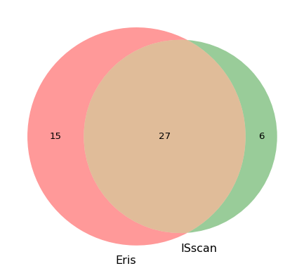

wget -nc ftp://ftp.sra.ebi.ac.uk/vol1/fastq/SRR519/002/SRR5194982/SRR5194982_1.fastq.gz
wget -nc ftp://ftp.sra.ebi.ac.uk/vol1/fastq/SRR519/002/SRR5194982/SRR5194982_2.fastq.gzWeek 05: Joined Bunya training and started exploring the test dataset E coli 958
Overview
Daily Log
25-08-2025
- Weekly project meeting
- Leah and Tom have given comments on the project plan draft
- Dimas has already address some of tthe comments
- Add typical IS figure
- Add figure on how IS can mess up the de brujin graph
- Add PseudoR in the benchmarking tool againts
26-08-2025
- Finalised the project plan, and submitted to the BlackBoard
- Joined the Bunya HPC training
- There are three drives: home (just for login), scratch (fast access, temporary for 90 days), and RDM (back up here, slow access, for storing)
- Do any cimputattion activity in the compute node
- onBunya intro, interactive way to get acces to the Bunya from web browser
28-08-2025
Started to explore the testing dataset E coli 958
- Downloaded the genbank file, and visualise it on the artemis
- Downloaded the illumina paired end reads, from ENA SRR5194982
Assemblied the Illumina reads using spades
~/bin/SPAdes-4.2.0-Linux/bin/spades.py -1 data/ecoli958/fastqs/SRR5194982_1.fastq.gz -2 data/ecoli958/fastqs/SRR5194982_2.fastq.gz --threads 8 --memory 32 -o outputs/spades/- Assemblied the Illumina reads using spades (with
--isolate)
~/bin/SPAdes-4.2.0-Linux/bin/spades.py --isolate -1 data/ecoli958/fastqs/SRR5194982_1.fastq.gz -2 data/ecoli958/fastqs/SRR5194982_2.fastq.gz --threads 8 --memory 32 -o outputs/spades-isolatesidentify IS in from short read genome assembly result
Run Eris in both assembly results, with gfa and fasta file separately
!mkdir -p eris-outputs
!eris scan ../../data/ecoli/spades-isolates/assembly_graph_after_simplification.gfa > eris-outputs/result_gfa_isolate.tsv
!eris scan ../../data/ecoli/spades-isolates/contigs.fasta > eris-outputs/result_fasta_isolate.tsv
!eris scan ../../data/ecoli/spades-outputs/assembly_graph_after_simplification.gfa > eris-outputs/result_gfa.tsv
!eris scan ../../data/ecoli/spades-outputs/contigs.fasta > eris-outputs/result_fasta.tsvhow many IS detected by Eris?
!grep "mobile_element" eris-outputs/result_gfa_isolate.tsv | wc -l
!grep "mobile_element" eris-outputs/result_fasta_isolate.tsv | wc -l
!grep "mobile_element" eris-outputs/result_gfa.tsv | wc -l
!grep "mobile_element" eris-outputs/result_fasta.tsv | wc -l 139
66
89
61Eris results seems to be influenced by what input file type (gfa or fasta) and how assembly genome is genereated (with or without –isolate flag).
Run ISEcan on both assembly results
!isescan.py --seqfile outputs/spades-isolate/contigs.fasta --output outputs/isescan/ --nthread 2
!isescan.py --seqfile outputs/spades/contigs.fasta --output outputs/isescan/ --nthread 2how many IS detected by Isescan?
!tail +2 ../../data/ecoli/isescan-outputs/spades/contigs.fasta.tsv | wc -l
!tail +2 ../../data/ecoli/isescan-outputs/spades-isolates/contigs.fasta.tsv | wc -l 58
77import pandas as pd
eris_fasta = pd.read_csv("eris-outputs/result_fasta.tsv", sep="\t")
eris_fasta = eris_fasta[eris_fasta['Type'] == "mobile_element"]
eris_fasta.head()| Genome | Feature | Type | Contig | Start | End | Strand | Partial | Element | Element_distance | ... | Element_effect | Percent_identity | Percent_coverage | Name | Family | Group | Synonyms | Origin | IR | DR | |
|---|---|---|---|---|---|---|---|---|---|---|---|---|---|---|---|---|---|---|---|---|---|
| 0 | contig | 191990d0-3046-4e4f-86eb-2b7f5d2e7d11 | mobile_element | NODE_100_length_1368_cov_118.453161 | 55 | 162 | 1 | True | 191990d0-3046-4e4f-86eb-2b7f5d2e7d11 | - | ... | - | 97.19626168224299 | 8.53950518754988 | ISKpn37 | IS3 | IS3 | NaN | Klebsiella pneumoniae | 23/27 | NaN |
| 2 | contig | 56b4ca0b-dd15-428c-b75b-3ea4a52f4529 | mobile_element | NODE_102_length_1330_cov_112.021961 | 47 | 1268 | 1 | False | 56b4ca0b-dd15-428c-b75b-3ea4a52f4529 | - | ... | - | 99.83619983619984 | 100.0 | IS30 | IS30 | NaN | NaN | Escherichia coli | 23/26 | 2 |
| 5 | contig | a7b31d8d-4b5c-4a22-b208-4da558e0f8e4 | mobile_element | NODE_116_length_894_cov_238.991657 | 0 | 894 | -1 | True | a7b31d8d-4b5c-4a22-b208-4da558e0f8e4 | - | ... | - | 99.77678571428571 | 70.7740916271722 | ISSd1 | IS3 | IS3 | NaN | Shigella dysenteriae | 19/27 | NaN |
| 8 | contig | 48c5af22-cd3b-4b41-b050-bb2addbabddb | mobile_element | NODE_11_length_158869_cov_118.708621 | 158756 | 158869 | -1 | True | 48c5af22-cd3b-4b41-b050-bb2addbabddb | - | ... | - | 100.0 | 9.04 | ISEc52 | IS3 | IS3 | NaN | Escherichia coli | 21/27 | 3 |
| 9 | contig | 91c0be6f-05aa-4990-872e-dbcf40bbe8bb | mobile_element | NODE_120_length_777_cov_1709.146814 | 0 | 777 | -1 | True | 91c0be6f-05aa-4990-872e-dbcf40bbe8bb | - | ... | - | 100.0 | 94.7560975609756 | IS26 | IS6 | NaN | NaN | Proteus vulgaris | 14 | 8 |
5 rows × 22 columns
isescan_fasta = pd.read_csv("../../data/ecoli/isescan-outputs/spades/contigs.fasta.tsv", sep="\t")
isescan_fasta.head()| seqID | family | cluster | isBegin | isEnd | isLen | ncopy4is | start1 | end1 | start2 | ... | nGaps | orfBegin | orfEnd | strand | orfLen | E-value | E-value4copy | type | ov | tir | |
|---|---|---|---|---|---|---|---|---|---|---|---|---|---|---|---|---|---|---|---|---|---|
| 0 | NODE_116_length_894_cov_238.991657 | IS3 | IS3_176 | 133 | 795 | 663 | 1 | 133 | 145 | 783 | ... | 0 | 6 | 893 | - | 888 | 3.200000e-141 | 3.200000e-141 | p | 1 | CGGTTATTAAAAC:CGGTTATTACAAC |
| 1 | NODE_120_length_777_cov_1709.146814 | IS6 | IS6_292 | 53 | 775 | 723 | 1 | 0 | 0 | 0 | ... | 0 | 53 | 775 | - | 723 | 4.800000e-104 | 4.800000e-104 | p | 1 | -:- |
| 2 | NODE_121_length_768_cov_259.932679 | IS1 | IS1_316 | 1 | 768 | 768 | 1 | 1 | 23 | 746 | ... | 0 | 16 | 742 | - | 727 | 7.200000e-96 | 7.200000e-96 | c | 1 | GGTAATGACTCCAACTTACTGAT:GGTAATGCTGCCAACTTACTGAT |
| 3 | NODE_129_length_653_cov_377.841137 | IS3 | IS3_251 | 135 | 585 | 451 | 1 | 135 | 151 | 569 | ... | 0 | 3 | 650 | - | 648 | 4.400000e-102 | 4.400000e-102 | c | 1 | CAGACTCCTGAAGAAGC:CAGACTCATGAAAGAGC |
| 4 | NODE_12_length_144235_cov_76.841871 | IS4 | IS4_107 | 19622 | 20800 | 1179 | 1 | 19622 | 19644 | 20778 | ... | 0 | 19723 | 20928 | + | 1206 | 4.000000e-212 | 4.000000e-212 | c | 1 | AACGGCCCCTTCTGGGGTAATGC:AACGGCCCCAGAAGGGGTAATGC |
5 rows × 24 columns
isescan output seems only reporting IS family, not IS Name. Contig column in eris, and seqID have the same value with id contig from fasta
pd.set_option('display.max_rows', None)
# select less columns
eris_fasta = eris_fasta[["Contig", "Start", "End", "Strand", "Partial","Percent_identity", "Percent_coverage", "Name", "Family", "Group"]]
isescan_fasta = isescan_fasta[["seqID", "family", "cluster", "isBegin", "isEnd", "isLen"]]
# inner join by contig id
eris_ises_contig = pd.merge(eris_fasta, isescan_fasta, left_on="Contig", right_on="seqID", how="inner")
eris_ises_contig| Contig | Start | End | Strand | Partial | Percent_identity | Percent_coverage | Name | Family | Group | seqID | family | cluster | isBegin | isEnd | isLen | |
|---|---|---|---|---|---|---|---|---|---|---|---|---|---|---|---|---|
| 0 | NODE_116_length_894_cov_238.991657 | 0 | 894 | -1 | True | 99.77678571428571 | 70.7740916271722 | ISSd1 | IS3 | IS3 | NODE_116_length_894_cov_238.991657 | IS3 | IS3_176 | 133 | 795 | 663 |
| 1 | NODE_120_length_777_cov_1709.146814 | 0 | 777 | -1 | True | 100.0 | 94.7560975609756 | IS26 | IS6 | NaN | NODE_120_length_777_cov_1709.146814 | IS6 | IS6_292 | 53 | 775 | 723 |
| 2 | NODE_121_length_768_cov_259.932679 | 0 | 768 | -1 | False | 99.34895833333334 | 100.0 | IS1F | IS1 | NaN | NODE_121_length_768_cov_259.932679 | IS1 | IS1_316 | 1 | 768 | 768 |
| 3 | NODE_129_length_653_cov_377.841137 | 0 | 653 | -1 | True | 100.0 | 52.239999999999995 | ISEc52 | IS3 | IS3 | NODE_129_length_653_cov_377.841137 | IS3 | IS3_251 | 135 | 585 | 451 |
| 4 | NODE_12_length_144235_cov_76.841871 | 19638 | 20621 | 1 | True | 98.06714140386572 | 68.93408134642355 | IS4 | IS4 | IS4 | NODE_12_length_144235_cov_76.841871 | IS4 | IS4_107 | 19622 | 20800 | 1179 |
| 5 | NODE_12_length_144235_cov_76.841871 | 19638 | 20621 | 1 | True | 98.06714140386572 | 68.93408134642355 | IS4 | IS4 | IS4 | NODE_12_length_144235_cov_76.841871 | IS3 | IS3_472 | 64743 | 65972 | 1230 |
| 6 | NODE_12_length_144235_cov_76.841871 | 19638 | 20621 | 1 | True | 98.06714140386572 | 68.93408134642355 | IS4 | IS4 | IS4 | NODE_12_length_144235_cov_76.841871 | IS21 | IS21_259 | 66495 | 67174 | 680 |
| 7 | NODE_12_length_144235_cov_76.841871 | 64742 | 65972 | 1 | False | 100.0 | 100.0 | ISEc24 | IS3 | IS51 | NODE_12_length_144235_cov_76.841871 | IS4 | IS4_107 | 19622 | 20800 | 1179 |
| 8 | NODE_12_length_144235_cov_76.841871 | 64742 | 65972 | 1 | False | 100.0 | 100.0 | ISEc24 | IS3 | IS51 | NODE_12_length_144235_cov_76.841871 | IS3 | IS3_472 | 64743 | 65972 | 1230 |
| 9 | NODE_12_length_144235_cov_76.841871 | 64742 | 65972 | 1 | False | 100.0 | 100.0 | ISEc24 | IS3 | IS51 | NODE_12_length_144235_cov_76.841871 | IS21 | IS21_259 | 66495 | 67174 | 680 |
| 10 | NODE_12_length_144235_cov_76.841871 | 66448 | 66933 | 1 | True | 92.65306122448979 | 25.05112474437628 | ISSen3 | IS21 | NaN | NODE_12_length_144235_cov_76.841871 | IS4 | IS4_107 | 19622 | 20800 | 1179 |
| 11 | NODE_12_length_144235_cov_76.841871 | 66448 | 66933 | 1 | True | 92.65306122448979 | 25.05112474437628 | ISSen3 | IS21 | NaN | NODE_12_length_144235_cov_76.841871 | IS3 | IS3_472 | 64743 | 65972 | 1230 |
| 12 | NODE_12_length_144235_cov_76.841871 | 66448 | 66933 | 1 | True | 92.65306122448979 | 25.05112474437628 | ISSen3 | IS21 | NaN | NODE_12_length_144235_cov_76.841871 | IS21 | IS21_259 | 66495 | 67174 | 680 |
| 13 | NODE_12_length_144235_cov_76.841871 | 71935 | 72629 | -1 | True | 91.35446685878964 | 55.38707102952913 | ISCfr4 | IS30 | NaN | NODE_12_length_144235_cov_76.841871 | IS4 | IS4_107 | 19622 | 20800 | 1179 |
| 14 | NODE_12_length_144235_cov_76.841871 | 71935 | 72629 | -1 | True | 91.35446685878964 | 55.38707102952913 | ISCfr4 | IS30 | NaN | NODE_12_length_144235_cov_76.841871 | IS3 | IS3_472 | 64743 | 65972 | 1230 |
| 15 | NODE_12_length_144235_cov_76.841871 | 71935 | 72629 | -1 | True | 91.35446685878964 | 55.38707102952913 | ISCfr4 | IS30 | NaN | NODE_12_length_144235_cov_76.841871 | IS21 | IS21_259 | 66495 | 67174 | 680 |
| 16 | NODE_132_length_640_cov_221.097436 | 0 | 640 | -1 | True | 99.6875 | 26.208026208026208 | ISEc8 | IS66 | NaN | NODE_132_length_640_cov_221.097436 | IS66 | IS66_46 | 41 | 616 | 576 |
| 17 | NODE_135_length_613_cov_176.451613 | 0 | 613 | -1 | True | 99.673735725938 | 86.45980253878702 | IS200C | IS200/IS605 | IS200 | NODE_135_length_613_cov_176.451613 | IS200/IS605 | IS200/IS605_384 | 65 | 611 | 547 |
| 18 | NODE_148_length_443_cov_697.690722 | 0 | 443 | -1 | True | 99.77426636568849 | 57.682291666666664 | IS1A | IS1 | NaN | NODE_148_length_443_cov_697.690722 | IS1 | IS1_316 | 16 | 441 | 426 |
| 19 | NODE_16_length_117685_cov_119.298665 | 107825 | 108162 | 1 | True | 81.60919540229885 | 12.58134490238612 | ISEc49 | IS66 | NaN | NODE_16_length_117685_cov_119.298665 | IS4 | IS4_84 | 108737 | 108952 | 216 |
| 20 | NODE_16_length_117685_cov_119.298665 | 107825 | 108162 | 1 | True | 81.60919540229885 | 12.58134490238612 | ISEc49 | IS66 | NaN | NODE_16_length_117685_cov_119.298665 | IS3 | IS3_461 | 115538 | 115714 | 177 |
| 21 | NODE_16_length_117685_cov_119.298665 | 108665 | 109118 | 1 | True | 97.57174392935983 | 29.2258064516129 | ISEc13 | IS4 | IS50 | NODE_16_length_117685_cov_119.298665 | IS4 | IS4_84 | 108737 | 108952 | 216 |
| 22 | NODE_16_length_117685_cov_119.298665 | 108665 | 109118 | 1 | True | 97.57174392935983 | 29.2258064516129 | ISEc13 | IS4 | IS50 | NODE_16_length_117685_cov_119.298665 | IS3 | IS3_461 | 115538 | 115714 | 177 |
| 23 | NODE_170_length_336_cov_214.619217 | 1 | 328 | 1 | True | 99.38837920489296 | 25.87025316455696 | IS600 | IS3 | IS3 | NODE_170_length_336_cov_214.619217 | IS3 | IS3_472 | 66 | 335 | 270 |
| 24 | NODE_28_length_75424_cov_70.919675 | 45934 | 47225 | 1 | False | 96.59178931061193 | 100.0 | ISEc1 | ISAs1 | NaN | NODE_28_length_75424_cov_70.919675 | ISAS1 | ISAS1_192 | 45935 | 47225 | 1291 |
| 25 | NODE_29_length_73869_cov_117.199935 | 65710 | 67595 | 1 | False | 100.0 | 100.0 | ISEc53 | ISL3 | NaN | NODE_29_length_73869_cov_117.199935 | IS21 | IS21_259 | 12952 | 13922 | 971 |
| 26 | NODE_29_length_73869_cov_117.199935 | 65710 | 67595 | 1 | False | 100.0 | 100.0 | ISEc53 | ISL3 | NaN | NODE_29_length_73869_cov_117.199935 | ISNCY | ISNCY_229 | 36647 | 38501 | 1855 |
| 27 | NODE_29_length_73869_cov_117.199935 | 65710 | 67595 | 1 | False | 100.0 | 100.0 | ISEc53 | ISL3 | NaN | NODE_29_length_73869_cov_117.199935 | ISL3 | ISL3_158 | 65947 | 68051 | 2105 |
| 28 | NODE_30_length_67960_cov_79.921228 | 352 | 2074 | 1 | False | 95.23809523809523 | 100.0 | ISEc38 | ISL3 | NaN | NODE_30_length_67960_cov_79.921228 | ISL3 | ISL3_265|ISL3||protein:plasmid:123177 | 331 | 2096 | 1766 |
| 29 | NODE_30_length_67960_cov_79.921228 | 352 | 2074 | 1 | False | 95.23809523809523 | 100.0 | ISEc38 | ISL3 | NaN | NODE_30_length_67960_cov_79.921228 | IS66 | IS66_345 | 6228 | 7338 | 1111 |
| 30 | NODE_33_length_42689_cov_130.948773 | 6277 | 8408 | 1 | False | 99.6715157203191 | 100.0 | IS21 | IS21 | NaN | NODE_33_length_42689_cov_130.948773 | ISNCY | ISNCY_229 | 5523 | 6185 | 663 |
| 31 | NODE_33_length_42689_cov_130.948773 | 6277 | 8408 | 1 | False | 99.6715157203191 | 100.0 | IS21 | IS21 | NaN | NODE_33_length_42689_cov_130.948773 | IS21 | IS21_122 | 6278 | 8408 | 2131 |
| 32 | NODE_33_length_42689_cov_130.948773 | 6277 | 8408 | 1 | False | 99.6715157203191 | 100.0 | IS21 | IS21 | NaN | NODE_33_length_42689_cov_130.948773 | IS66 | IS66_46 | 9410 | 11401 | 1992 |
| 33 | NODE_33_length_42689_cov_130.948773 | 6277 | 8408 | 1 | False | 99.6715157203191 | 100.0 | IS21 | IS21 | NaN | NODE_33_length_42689_cov_130.948773 | IS66 | IS66_393 | 11086 | 12795 | 1710 |
| 34 | NODE_33_length_42689_cov_130.948773 | 6277 | 8408 | 1 | False | 99.6715157203191 | 100.0 | IS21 | IS21 | NaN | NODE_33_length_42689_cov_130.948773 | IS66 | IS66_43 | 19623 | 21271 | 1649 |
| 35 | NODE_33_length_42689_cov_130.948773 | 6277 | 8408 | 1 | False | 99.6715157203191 | 100.0 | IS21 | IS21 | NaN | NODE_33_length_42689_cov_130.948773 | IS66 | IS66_43 | 20756 | 21914 | 1159 |
| 36 | NODE_33_length_42689_cov_130.948773 | 6277 | 8408 | 1 | False | 99.6715157203191 | 100.0 | IS21 | IS21 | NaN | NODE_33_length_42689_cov_130.948773 | IS66 | IS66_345 | 22835 | 23721 | 887 |
| 37 | NODE_33_length_42689_cov_130.948773 | 6277 | 8408 | 1 | False | 99.6715157203191 | 100.0 | IS21 | IS21 | NaN | NODE_33_length_42689_cov_130.948773 | IS3 | IS3_479 | 23721 | 25152 | 1432 |
| 38 | NODE_33_length_42689_cov_130.948773 | 6277 | 8408 | 1 | False | 99.6715157203191 | 100.0 | IS21 | IS21 | NaN | NODE_33_length_42689_cov_130.948773 | IS66 | IS66_345 | 25237 | 27985 | 2749 |
| 39 | NODE_33_length_42689_cov_130.948773 | 9688 | 12387 | -1 | False | 98.11111111111111 | 100.03705075954056 | ISCro1 | IS66 | NaN | NODE_33_length_42689_cov_130.948773 | ISNCY | ISNCY_229 | 5523 | 6185 | 663 |
| 40 | NODE_33_length_42689_cov_130.948773 | 9688 | 12387 | -1 | False | 98.11111111111111 | 100.03705075954056 | ISCro1 | IS66 | NaN | NODE_33_length_42689_cov_130.948773 | IS21 | IS21_122 | 6278 | 8408 | 2131 |
| 41 | NODE_33_length_42689_cov_130.948773 | 9688 | 12387 | -1 | False | 98.11111111111111 | 100.03705075954056 | ISCro1 | IS66 | NaN | NODE_33_length_42689_cov_130.948773 | IS66 | IS66_46 | 9410 | 11401 | 1992 |
| 42 | NODE_33_length_42689_cov_130.948773 | 9688 | 12387 | -1 | False | 98.11111111111111 | 100.03705075954056 | ISCro1 | IS66 | NaN | NODE_33_length_42689_cov_130.948773 | IS66 | IS66_393 | 11086 | 12795 | 1710 |
| 43 | NODE_33_length_42689_cov_130.948773 | 9688 | 12387 | -1 | False | 98.11111111111111 | 100.03705075954056 | ISCro1 | IS66 | NaN | NODE_33_length_42689_cov_130.948773 | IS66 | IS66_43 | 19623 | 21271 | 1649 |
| 44 | NODE_33_length_42689_cov_130.948773 | 9688 | 12387 | -1 | False | 98.11111111111111 | 100.03705075954056 | ISCro1 | IS66 | NaN | NODE_33_length_42689_cov_130.948773 | IS66 | IS66_43 | 20756 | 21914 | 1159 |
| 45 | NODE_33_length_42689_cov_130.948773 | 9688 | 12387 | -1 | False | 98.11111111111111 | 100.03705075954056 | ISCro1 | IS66 | NaN | NODE_33_length_42689_cov_130.948773 | IS66 | IS66_345 | 22835 | 23721 | 887 |
| 46 | NODE_33_length_42689_cov_130.948773 | 9688 | 12387 | -1 | False | 98.11111111111111 | 100.03705075954056 | ISCro1 | IS66 | NaN | NODE_33_length_42689_cov_130.948773 | IS3 | IS3_479 | 23721 | 25152 | 1432 |
| 47 | NODE_33_length_42689_cov_130.948773 | 9688 | 12387 | -1 | False | 98.11111111111111 | 100.03705075954056 | ISCro1 | IS66 | NaN | NODE_33_length_42689_cov_130.948773 | IS66 | IS66_345 | 25237 | 27985 | 2749 |
| 48 | NODE_33_length_42689_cov_130.948773 | 19755 | 21667 | 1 | True | 78.08008213552361 | 70.42660882140275 | ISEc49 | IS66 | NaN | NODE_33_length_42689_cov_130.948773 | ISNCY | ISNCY_229 | 5523 | 6185 | 663 |
| 49 | NODE_33_length_42689_cov_130.948773 | 19755 | 21667 | 1 | True | 78.08008213552361 | 70.42660882140275 | ISEc49 | IS66 | NaN | NODE_33_length_42689_cov_130.948773 | IS21 | IS21_122 | 6278 | 8408 | 2131 |
| 50 | NODE_33_length_42689_cov_130.948773 | 19755 | 21667 | 1 | True | 78.08008213552361 | 70.42660882140275 | ISEc49 | IS66 | NaN | NODE_33_length_42689_cov_130.948773 | IS66 | IS66_46 | 9410 | 11401 | 1992 |
| 51 | NODE_33_length_42689_cov_130.948773 | 19755 | 21667 | 1 | True | 78.08008213552361 | 70.42660882140275 | ISEc49 | IS66 | NaN | NODE_33_length_42689_cov_130.948773 | IS66 | IS66_393 | 11086 | 12795 | 1710 |
| 52 | NODE_33_length_42689_cov_130.948773 | 19755 | 21667 | 1 | True | 78.08008213552361 | 70.42660882140275 | ISEc49 | IS66 | NaN | NODE_33_length_42689_cov_130.948773 | IS66 | IS66_43 | 19623 | 21271 | 1649 |
| 53 | NODE_33_length_42689_cov_130.948773 | 19755 | 21667 | 1 | True | 78.08008213552361 | 70.42660882140275 | ISEc49 | IS66 | NaN | NODE_33_length_42689_cov_130.948773 | IS66 | IS66_43 | 20756 | 21914 | 1159 |
| 54 | NODE_33_length_42689_cov_130.948773 | 19755 | 21667 | 1 | True | 78.08008213552361 | 70.42660882140275 | ISEc49 | IS66 | NaN | NODE_33_length_42689_cov_130.948773 | IS66 | IS66_345 | 22835 | 23721 | 887 |
| 55 | NODE_33_length_42689_cov_130.948773 | 19755 | 21667 | 1 | True | 78.08008213552361 | 70.42660882140275 | ISEc49 | IS66 | NaN | NODE_33_length_42689_cov_130.948773 | IS3 | IS3_479 | 23721 | 25152 | 1432 |
| 56 | NODE_33_length_42689_cov_130.948773 | 19755 | 21667 | 1 | True | 78.08008213552361 | 70.42660882140275 | ISEc49 | IS66 | NaN | NODE_33_length_42689_cov_130.948773 | IS66 | IS66_345 | 25237 | 27985 | 2749 |
| 57 | NODE_33_length_42689_cov_130.948773 | 21992 | 23106 | 1 | True | 83.06878306878306 | 40.99783080260303 | ISEc49 | IS66 | NaN | NODE_33_length_42689_cov_130.948773 | ISNCY | ISNCY_229 | 5523 | 6185 | 663 |
| 58 | NODE_33_length_42689_cov_130.948773 | 21992 | 23106 | 1 | True | 83.06878306878306 | 40.99783080260303 | ISEc49 | IS66 | NaN | NODE_33_length_42689_cov_130.948773 | IS21 | IS21_122 | 6278 | 8408 | 2131 |
| 59 | NODE_33_length_42689_cov_130.948773 | 21992 | 23106 | 1 | True | 83.06878306878306 | 40.99783080260303 | ISEc49 | IS66 | NaN | NODE_33_length_42689_cov_130.948773 | IS66 | IS66_46 | 9410 | 11401 | 1992 |
| 60 | NODE_33_length_42689_cov_130.948773 | 21992 | 23106 | 1 | True | 83.06878306878306 | 40.99783080260303 | ISEc49 | IS66 | NaN | NODE_33_length_42689_cov_130.948773 | IS66 | IS66_393 | 11086 | 12795 | 1710 |
| 61 | NODE_33_length_42689_cov_130.948773 | 21992 | 23106 | 1 | True | 83.06878306878306 | 40.99783080260303 | ISEc49 | IS66 | NaN | NODE_33_length_42689_cov_130.948773 | IS66 | IS66_43 | 19623 | 21271 | 1649 |
| 62 | NODE_33_length_42689_cov_130.948773 | 21992 | 23106 | 1 | True | 83.06878306878306 | 40.99783080260303 | ISEc49 | IS66 | NaN | NODE_33_length_42689_cov_130.948773 | IS66 | IS66_43 | 20756 | 21914 | 1159 |
| 63 | NODE_33_length_42689_cov_130.948773 | 21992 | 23106 | 1 | True | 83.06878306878306 | 40.99783080260303 | ISEc49 | IS66 | NaN | NODE_33_length_42689_cov_130.948773 | IS66 | IS66_345 | 22835 | 23721 | 887 |
| 64 | NODE_33_length_42689_cov_130.948773 | 21992 | 23106 | 1 | True | 83.06878306878306 | 40.99783080260303 | ISEc49 | IS66 | NaN | NODE_33_length_42689_cov_130.948773 | IS3 | IS3_479 | 23721 | 25152 | 1432 |
| 65 | NODE_33_length_42689_cov_130.948773 | 21992 | 23106 | 1 | True | 83.06878306878306 | 40.99783080260303 | ISEc49 | IS66 | NaN | NODE_33_length_42689_cov_130.948773 | IS66 | IS66_345 | 25237 | 27985 | 2749 |
| 66 | NODE_33_length_42689_cov_130.948773 | 23834 | 24629 | 1 | True | 95.72327044025157 | 60.68702290076335 | IS629 | IS3 | IS51 | NODE_33_length_42689_cov_130.948773 | ISNCY | ISNCY_229 | 5523 | 6185 | 663 |
| 67 | NODE_33_length_42689_cov_130.948773 | 23834 | 24629 | 1 | True | 95.72327044025157 | 60.68702290076335 | IS629 | IS3 | IS51 | NODE_33_length_42689_cov_130.948773 | IS21 | IS21_122 | 6278 | 8408 | 2131 |
| 68 | NODE_33_length_42689_cov_130.948773 | 23834 | 24629 | 1 | True | 95.72327044025157 | 60.68702290076335 | IS629 | IS3 | IS51 | NODE_33_length_42689_cov_130.948773 | IS66 | IS66_46 | 9410 | 11401 | 1992 |
| 69 | NODE_33_length_42689_cov_130.948773 | 23834 | 24629 | 1 | True | 95.72327044025157 | 60.68702290076335 | IS629 | IS3 | IS51 | NODE_33_length_42689_cov_130.948773 | IS66 | IS66_393 | 11086 | 12795 | 1710 |
| 70 | NODE_33_length_42689_cov_130.948773 | 23834 | 24629 | 1 | True | 95.72327044025157 | 60.68702290076335 | IS629 | IS3 | IS51 | NODE_33_length_42689_cov_130.948773 | IS66 | IS66_43 | 19623 | 21271 | 1649 |
| 71 | NODE_33_length_42689_cov_130.948773 | 23834 | 24629 | 1 | True | 95.72327044025157 | 60.68702290076335 | IS629 | IS3 | IS51 | NODE_33_length_42689_cov_130.948773 | IS66 | IS66_43 | 20756 | 21914 | 1159 |
| 72 | NODE_33_length_42689_cov_130.948773 | 23834 | 24629 | 1 | True | 95.72327044025157 | 60.68702290076335 | IS629 | IS3 | IS51 | NODE_33_length_42689_cov_130.948773 | IS66 | IS66_345 | 22835 | 23721 | 887 |
| 73 | NODE_33_length_42689_cov_130.948773 | 23834 | 24629 | 1 | True | 95.72327044025157 | 60.68702290076335 | IS629 | IS3 | IS51 | NODE_33_length_42689_cov_130.948773 | IS3 | IS3_479 | 23721 | 25152 | 1432 |
| 74 | NODE_33_length_42689_cov_130.948773 | 23834 | 24629 | 1 | True | 95.72327044025157 | 60.68702290076335 | IS629 | IS3 | IS51 | NODE_33_length_42689_cov_130.948773 | IS66 | IS66_345 | 25237 | 27985 | 2749 |
| 75 | NODE_33_length_42689_cov_130.948773 | 26901 | 27414 | 1 | True | 79.26356589147287 | 38.622754491017965 | ISSen10 | IS3 | NaN | NODE_33_length_42689_cov_130.948773 | ISNCY | ISNCY_229 | 5523 | 6185 | 663 |
| 76 | NODE_33_length_42689_cov_130.948773 | 26901 | 27414 | 1 | True | 79.26356589147287 | 38.622754491017965 | ISSen10 | IS3 | NaN | NODE_33_length_42689_cov_130.948773 | IS21 | IS21_122 | 6278 | 8408 | 2131 |
| 77 | NODE_33_length_42689_cov_130.948773 | 26901 | 27414 | 1 | True | 79.26356589147287 | 38.622754491017965 | ISSen10 | IS3 | NaN | NODE_33_length_42689_cov_130.948773 | IS66 | IS66_46 | 9410 | 11401 | 1992 |
| 78 | NODE_33_length_42689_cov_130.948773 | 26901 | 27414 | 1 | True | 79.26356589147287 | 38.622754491017965 | ISSen10 | IS3 | NaN | NODE_33_length_42689_cov_130.948773 | IS66 | IS66_393 | 11086 | 12795 | 1710 |
| 79 | NODE_33_length_42689_cov_130.948773 | 26901 | 27414 | 1 | True | 79.26356589147287 | 38.622754491017965 | ISSen10 | IS3 | NaN | NODE_33_length_42689_cov_130.948773 | IS66 | IS66_43 | 19623 | 21271 | 1649 |
| 80 | NODE_33_length_42689_cov_130.948773 | 26901 | 27414 | 1 | True | 79.26356589147287 | 38.622754491017965 | ISSen10 | IS3 | NaN | NODE_33_length_42689_cov_130.948773 | IS66 | IS66_43 | 20756 | 21914 | 1159 |
| 81 | NODE_33_length_42689_cov_130.948773 | 26901 | 27414 | 1 | True | 79.26356589147287 | 38.622754491017965 | ISSen10 | IS3 | NaN | NODE_33_length_42689_cov_130.948773 | IS66 | IS66_345 | 22835 | 23721 | 887 |
| 82 | NODE_33_length_42689_cov_130.948773 | 26901 | 27414 | 1 | True | 79.26356589147287 | 38.622754491017965 | ISSen10 | IS3 | NaN | NODE_33_length_42689_cov_130.948773 | IS3 | IS3_479 | 23721 | 25152 | 1432 |
| 83 | NODE_33_length_42689_cov_130.948773 | 26901 | 27414 | 1 | True | 79.26356589147287 | 38.622754491017965 | ISSen10 | IS3 | NaN | NODE_33_length_42689_cov_130.948773 | IS66 | IS66_345 | 25237 | 27985 | 2749 |
| 84 | NODE_3_length_282662_cov_86.852070 | 0 | 380 | -1 | True | 100.0 | 49.47916666666667 | IS1A | IS1 | NaN | NODE_3_length_282662_cov_86.852070 | ISNCY | ISNCY_229 | 168636 | 169422 | 787 |
| 85 | NODE_3_length_282662_cov_86.852070 | 0 | 380 | -1 | True | 100.0 | 49.47916666666667 | IS1A | IS1 | NaN | NODE_3_length_282662_cov_86.852070 | ISNCY | ISNCY_229 | 169538 | 169759 | 222 |
| 86 | NODE_41_length_22011_cov_118.383403 | 2277 | 3587 | -1 | False | 96.03053435114504 | 100.0 | IS1203 | IS3 | IS51 | NODE_41_length_22011_cov_118.383403 | IS3 | IS3_168 | 1830 | 4018 | 2189 |
| 87 | NODE_41_length_22011_cov_118.383403 | 2277 | 3587 | -1 | False | 96.03053435114504 | 100.0 | IS1203 | IS3 | IS51 | NODE_41_length_22011_cov_118.383403 | ISL3 | ISL3_158 | 3972 | 5483 | 1512 |
| 88 | NODE_41_length_22011_cov_118.383403 | 4244 | 5022 | -1 | True | 93.31619537275064 | 59.118541033434646 | ISKox3 | ISL3 | NaN | NODE_41_length_22011_cov_118.383403 | IS3 | IS3_168 | 1830 | 4018 | 2189 |
| 89 | NODE_41_length_22011_cov_118.383403 | 4244 | 5022 | -1 | True | 93.31619537275064 | 59.118541033434646 | ISKox3 | ISL3 | NaN | NODE_41_length_22011_cov_118.383403 | ISL3 | ISL3_158 | 3972 | 5483 | 1512 |
| 90 | NODE_42_length_21423_cov_118.401629 | 89 | 2080 | -1 | True | 97.23756906077348 | 78.60244769048559 | IS682 | IS66 | NaN | NODE_42_length_21423_cov_118.401629 | IS66 | IS66_393 | 791 | 2395 | 1605 |
| 91 | NODE_42_length_21423_cov_118.401629 | 89 | 2080 | -1 | True | 97.23756906077348 | 78.60244769048559 | IS682 | IS66 | NaN | NODE_42_length_21423_cov_118.401629 | IS4 | IS4_107 | 2363 | 2624 | 262 |
| 92 | NODE_42_length_21423_cov_118.401629 | 89 | 2080 | -1 | True | 97.23756906077348 | 78.60244769048559 | IS682 | IS66 | NaN | NODE_42_length_21423_cov_118.401629 | IS3 | IS3_422 | 11623 | 12936 | 1314 |
| 93 | NODE_42_length_21423_cov_118.401629 | 89 | 2080 | -1 | True | 97.23756906077348 | 78.60244769048559 | IS682 | IS66 | NaN | NODE_42_length_21423_cov_118.401629 | IS110 | IS110_170 | 17999 | 18271 | 273 |
| 94 | NODE_42_length_21423_cov_118.401629 | 89 | 2080 | -1 | True | 97.23756906077348 | 78.60244769048559 | IS682 | IS66 | NaN | NODE_42_length_21423_cov_118.401629 | IS3 | IS3_61 | 18912 | 20547 | 1636 |
| 95 | NODE_42_length_21423_cov_118.401629 | 11613 | 12944 | 1 | False | 95.56724267468068 | 100.0 | IS2 | IS3 | IS2 | NODE_42_length_21423_cov_118.401629 | IS66 | IS66_393 | 791 | 2395 | 1605 |
| 96 | NODE_42_length_21423_cov_118.401629 | 11613 | 12944 | 1 | False | 95.56724267468068 | 100.0 | IS2 | IS3 | IS2 | NODE_42_length_21423_cov_118.401629 | IS4 | IS4_107 | 2363 | 2624 | 262 |
| 97 | NODE_42_length_21423_cov_118.401629 | 11613 | 12944 | 1 | False | 95.56724267468068 | 100.0 | IS2 | IS3 | IS2 | NODE_42_length_21423_cov_118.401629 | IS3 | IS3_422 | 11623 | 12936 | 1314 |
| 98 | NODE_42_length_21423_cov_118.401629 | 11613 | 12944 | 1 | False | 95.56724267468068 | 100.0 | IS2 | IS3 | IS2 | NODE_42_length_21423_cov_118.401629 | IS110 | IS110_170 | 17999 | 18271 | 273 |
| 99 | NODE_42_length_21423_cov_118.401629 | 11613 | 12944 | 1 | False | 95.56724267468068 | 100.0 | IS2 | IS3 | IS2 | NODE_42_length_21423_cov_118.401629 | IS3 | IS3_61 | 18912 | 20547 | 1636 |
| 100 | NODE_42_length_21423_cov_118.401629 | 15708 | 15902 | -1 | True | 96.3917525773196 | 7.161314138058324 | ISEc83 | IS66 | NaN | NODE_42_length_21423_cov_118.401629 | IS66 | IS66_393 | 791 | 2395 | 1605 |
| 101 | NODE_42_length_21423_cov_118.401629 | 15708 | 15902 | -1 | True | 96.3917525773196 | 7.161314138058324 | ISEc83 | IS66 | NaN | NODE_42_length_21423_cov_118.401629 | IS4 | IS4_107 | 2363 | 2624 | 262 |
| 102 | NODE_42_length_21423_cov_118.401629 | 15708 | 15902 | -1 | True | 96.3917525773196 | 7.161314138058324 | ISEc83 | IS66 | NaN | NODE_42_length_21423_cov_118.401629 | IS3 | IS3_422 | 11623 | 12936 | 1314 |
| 103 | NODE_42_length_21423_cov_118.401629 | 15708 | 15902 | -1 | True | 96.3917525773196 | 7.161314138058324 | ISEc83 | IS66 | NaN | NODE_42_length_21423_cov_118.401629 | IS110 | IS110_170 | 17999 | 18271 | 273 |
| 104 | NODE_42_length_21423_cov_118.401629 | 15708 | 15902 | -1 | True | 96.3917525773196 | 7.161314138058324 | ISEc83 | IS66 | NaN | NODE_42_length_21423_cov_118.401629 | IS3 | IS3_61 | 18912 | 20547 | 1636 |
| 105 | NODE_42_length_21423_cov_118.401629 | 18072 | 18415 | -1 | True | 94.76744186046511 | 23.773324118866622 | ISEc45 | IS110 | IS1111 | NODE_42_length_21423_cov_118.401629 | IS66 | IS66_393 | 791 | 2395 | 1605 |
| 106 | NODE_42_length_21423_cov_118.401629 | 18072 | 18415 | -1 | True | 94.76744186046511 | 23.773324118866622 | ISEc45 | IS110 | IS1111 | NODE_42_length_21423_cov_118.401629 | IS4 | IS4_107 | 2363 | 2624 | 262 |
| 107 | NODE_42_length_21423_cov_118.401629 | 18072 | 18415 | -1 | True | 94.76744186046511 | 23.773324118866622 | ISEc45 | IS110 | IS1111 | NODE_42_length_21423_cov_118.401629 | IS3 | IS3_422 | 11623 | 12936 | 1314 |
| 108 | NODE_42_length_21423_cov_118.401629 | 18072 | 18415 | -1 | True | 94.76744186046511 | 23.773324118866622 | ISEc45 | IS110 | IS1111 | NODE_42_length_21423_cov_118.401629 | IS110 | IS110_170 | 17999 | 18271 | 273 |
| 109 | NODE_42_length_21423_cov_118.401629 | 18072 | 18415 | -1 | True | 94.76744186046511 | 23.773324118866622 | ISEc45 | IS110 | IS1111 | NODE_42_length_21423_cov_118.401629 | IS3 | IS3_61 | 18912 | 20547 | 1636 |
| 110 | NODE_42_length_21423_cov_118.401629 | 18927 | 20534 | -1 | True | 80.28430160692213 | 97.1188475390156 | ISEch14 | IS3 | IS150 | NODE_42_length_21423_cov_118.401629 | IS66 | IS66_393 | 791 | 2395 | 1605 |
| 111 | NODE_42_length_21423_cov_118.401629 | 18927 | 20534 | -1 | True | 80.28430160692213 | 97.1188475390156 | ISEch14 | IS3 | IS150 | NODE_42_length_21423_cov_118.401629 | IS4 | IS4_107 | 2363 | 2624 | 262 |
| 112 | NODE_42_length_21423_cov_118.401629 | 18927 | 20534 | -1 | True | 80.28430160692213 | 97.1188475390156 | ISEch14 | IS3 | IS150 | NODE_42_length_21423_cov_118.401629 | IS3 | IS3_422 | 11623 | 12936 | 1314 |
| 113 | NODE_42_length_21423_cov_118.401629 | 18927 | 20534 | -1 | True | 80.28430160692213 | 97.1188475390156 | ISEch14 | IS3 | IS150 | NODE_42_length_21423_cov_118.401629 | IS110 | IS110_170 | 17999 | 18271 | 273 |
| 114 | NODE_42_length_21423_cov_118.401629 | 18927 | 20534 | -1 | True | 80.28430160692213 | 97.1188475390156 | ISEch14 | IS3 | IS150 | NODE_42_length_21423_cov_118.401629 | IS3 | IS3_61 | 18912 | 20547 | 1636 |
| 115 | NODE_44_length_18379_cov_84.722986 | 1372 | 2831 | 1 | False | 99.86291980808774 | 100.0 | ISEc20 | IS110 | NaN | NODE_44_length_18379_cov_84.722986 | IS110 | IS110_139 | 1456 | 2833 | 1378 |
| 116 | NODE_44_length_18379_cov_84.722986 | 1372 | 2831 | 1 | False | 99.86291980808774 | 100.0 | ISEc20 | IS110 | NaN | NODE_44_length_18379_cov_84.722986 | IS66 | IS66_379|IS66||protein:plasmid:117438 | 4673 | 6724 | 2052 |
| 117 | NODE_44_length_18379_cov_84.722986 | 4857 | 6724 | -1 | False | 94.98464687819856 | 100.0 | IS100kyp | IS21 | NaN | NODE_44_length_18379_cov_84.722986 | IS110 | IS110_139 | 1456 | 2833 | 1378 |
| 118 | NODE_44_length_18379_cov_84.722986 | 4857 | 6724 | -1 | False | 94.98464687819856 | 100.0 | IS100kyp | IS21 | NaN | NODE_44_length_18379_cov_84.722986 | IS66 | IS66_379|IS66||protein:plasmid:117438 | 4673 | 6724 | 2052 |
| 119 | NODE_48_length_11189_cov_194.421681 | 7023 | 7903 | 1 | False | 100.0 | 100.0 | IS6100 | IS6 | NaN | NODE_48_length_11189_cov_194.421681 | IS6 | IS6_292 | 7023 | 7904 | 882 |
| 120 | NODE_5_length_203906_cov_116.162614 | 5045 | 5265 | 1 | True | 85.9090909090909 | 18.949181739879414 | ISKpn42 | IS110 | NaN | NODE_5_length_203906_cov_116.162614 | IS110 | IS110_236 | 5062 | 5217 | 156 |
| 121 | NODE_5_length_203906_cov_116.162614 | 5045 | 5265 | 1 | True | 85.9090909090909 | 18.949181739879414 | ISKpn42 | IS110 | NaN | NODE_5_length_203906_cov_116.162614 | IS21 | IS21_69 | 5571 | 7033 | 1463 |
| 122 | NODE_5_length_203906_cov_116.162614 | 5045 | 5265 | 1 | True | 85.9090909090909 | 18.949181739879414 | ISKpn42 | IS110 | NaN | NODE_5_length_203906_cov_116.162614 | IS3 | IS3_461 | 203455 | 203847 | 393 |
| 123 | NODE_5_length_203906_cov_116.162614 | 5472 | 7881 | 1 | False | 98.7551867219917 | 100.0 | ISEc10 | IS21 | NaN | NODE_5_length_203906_cov_116.162614 | IS110 | IS110_236 | 5062 | 5217 | 156 |
| 124 | NODE_5_length_203906_cov_116.162614 | 5472 | 7881 | 1 | False | 98.7551867219917 | 100.0 | ISEc10 | IS21 | NaN | NODE_5_length_203906_cov_116.162614 | IS21 | IS21_69 | 5571 | 7033 | 1463 |
| 125 | NODE_5_length_203906_cov_116.162614 | 5472 | 7881 | 1 | False | 98.7551867219917 | 100.0 | ISEc10 | IS21 | NaN | NODE_5_length_203906_cov_116.162614 | IS3 | IS3_461 | 203455 | 203847 | 393 |
| 126 | NODE_5_length_203906_cov_116.162614 | 203312 | 203906 | 1 | True | 100.0 | 47.52 | ISEc52 | IS3 | IS3 | NODE_5_length_203906_cov_116.162614 | IS110 | IS110_236 | 5062 | 5217 | 156 |
| 127 | NODE_5_length_203906_cov_116.162614 | 203312 | 203906 | 1 | True | 100.0 | 47.52 | ISEc52 | IS3 | IS3 | NODE_5_length_203906_cov_116.162614 | IS21 | IS21_69 | 5571 | 7033 | 1463 |
| 128 | NODE_5_length_203906_cov_116.162614 | 203312 | 203906 | 1 | True | 100.0 | 47.52 | ISEc52 | IS3 | IS3 | NODE_5_length_203906_cov_116.162614 | IS3 | IS3_461 | 203455 | 203847 | 393 |
| 129 | NODE_6_length_190918_cov_120.557264 | 54258 | 55716 | -1 | True | 97.87379972565158 | 83.4096109839817 | IS609 | IS200/IS605 | IS605 | NODE_6_length_190918_cov_120.557264 | IS200/IS605 | IS200/IS605_138 | 54302 | 55733 | 1432 |
| 130 | NODE_78_length_3593_cov_117.923403 | 54 | 1249 | -1 | False | 99.581589958159 | 100.0 | IS5 | IS5 | IS5 | NODE_78_length_3593_cov_117.923403 | IS5 | IS5_112 | 40 | 1264 | 1225 |
| 131 | NODE_78_length_3593_cov_117.923403 | 1249 | 1401 | 1 | True | 100.0 | 9.178743961352657 | ISEc9 | IS1380 | NaN | NODE_78_length_3593_cov_117.923403 | IS5 | IS5_112 | 40 | 1264 | 1225 |
| 132 | NODE_82_length_2770_cov_130.153591 | 1968 | 2770 | -1 | True | 83.1413612565445 | 39.107289107289105 | ISEc8 | IS66 | NaN | NODE_82_length_2770_cov_130.153591 | IS3 | IS3_168 | 2 | 254 | 253 |
| 133 | NODE_82_length_2770_cov_130.153591 | 1968 | 2770 | -1 | True | 83.1413612565445 | 39.107289107289105 | ISEc8 | IS66 | NaN | NODE_82_length_2770_cov_130.153591 | IS66 | IS66_46 | 1592 | 2657 | 1066 |
| 134 | NODE_83_length_2583_cov_412.215190 | 2 | 2583 | -1 | False | 99.96125532739248 | 100.0 | ISEc12 | IS21 | NaN | NODE_83_length_2583_cov_412.215190 | IS21 | IS21_288 | 3 | 864 | 862 |
| 135 | NODE_83_length_2583_cov_412.215190 | 2 | 2583 | -1 | False | 99.96125532739248 | 100.0 | ISEc12 | IS21 | NaN | NODE_83_length_2583_cov_412.215190 | IS21 | IS21_35 | 906 | 2452 | 1547 |
| 136 | NODE_84_length_2517_cov_536.854590 | 0 | 2517 | 1 | True | 99.96027016289233 | 99.40758293838863 | ISEc23 | IS66 | NaN | NODE_84_length_2517_cov_536.854590 | IS66 | IS66_46 | 595 | 2364 | 1770 |
| 137 | NODE_95_length_1512_cov_128.777625 | 557 | 1509 | -1 | True | 99.0546218487395 | 38.79380603096985 | ISEc22 | IS66 | NaN | NODE_95_length_1512_cov_128.777625 | IS66 | IS66_46 | 149 | 1493 | 1345 |
| 138 | NODE_97_length_1433_cov_153.005806 | 0 | 1432 | -1 | False | 99.51117318435753 | 100.0 | IS1397 | IS3 | IS150 | NODE_97_length_1433_cov_153.005806 | IS3 | IS3_61 | 1 | 1432 | 1432 |
How many contigs contain insertions of IS elements identified by Eris and ISEScan?
from matplotlib_venn import venn2
import matplotlib.pyplot as plt
eris = set(eris_fasta["Contig"])
isescan = set(isescan_fasta["seqID"])
# Plot Venn
venn2([eris, isescan], set_labels=("Eris", "ISscan"))
plt.show()
Inspect the IS elements in the E coli 958 genome
!awk '/mobile_element/ {print NR, $0}' ../../data/ecoli/ec958.gb | head -n 104937 mobile_element 233728..236259
4938 /mobile_element_type="insertion sequence:ISEc23"
29661 mobile_element 1365601..1366443
29663 /mobile_element_type="insertion sequence:unclassified
29806 mobile_element complement(1372288..1373517)
29807 /mobile_element_type="insertion sequence:ISEc24"
30788 mobile_element complement(1417477..1418621)
30790 /mobile_element_type="insertion sequence:IS4(partial)"
32174 mobile_element 1480032..1482480
32175 /mobile_element_type="insertion sequence:ISEc12"IS identifier with mobile_element and genomic coordinate in one line, and line after it, follows the IS name.. sometimes with unclassified and no IS family
# get IS features only from the genbank file, and convert it into bed file
import re, os
os.remove("../../data/ecoli/ec958_IS.bed")
pattern = r"(\d+)\.\.(\d+)"
with open("../../data/ecoli/ec958.gb", "r") as file:
lines = file.readlines()
for i, line in enumerate(lines):
if "LOCUS" in line:
chromosome = line.split()[1] + ".1"
if "mobile_element" in line.split():
region = re.search(pattern, line)
start, end = region.group().split("..")
orientation = "-" if "complement" in line else "+"
name = lines[i+1].split("=")[1]
name = name.replace('"', '').replace(";", "").strip()
with open("../../data/ecoli/ec958_IS.bed", "a") as output:
output.write(f"{chromosome}\t{int(start)-1}\t{end}\t{name}\t{0}\t{orientation}\n")# get IS features only from the genbank file, and convert it into bed file
import re, os
try:
os.remove("../../data/ecoli/pec958_IS.bed")
except FileNotFoundError:
pass
pattern = r"(\d+)\.\.(\d+)"
with open("../../data/ecoli/pEC958.gb", "r") as file:
lines = file.readlines()
for i, line in enumerate(lines):
if "LOCUS" in line:
chromosome = line.split()[1] + ".1"
if "mobile_element" in line.split():
region = re.search(pattern, line)
start, end = region.group().split("..")
orientation = "-" if "complement" in line else "+"
name = lines[i+1].split("=")[1]
name = name.replace('"', '').replace(";", "").strip()
with open("../../data/ecoli/pec958_IS.bed", "a") as output:
output.write(f"{chromosome}\t{int(start)-1}\t{end}\t{name}\t{0}\t{orientation}\n")pd.set_option('display.max_rows', None)
genome_is_bed = pd.read_csv("../../data/ecoli/ec958_IS.bed", sep="\t", header=None)
genome_is_bed.columns = ["chrom", "start", "end", "name", "score", "strand"][:genome_is_bed.shape[1]]
genome_is_bed| chrom | start | end | name | score | strand | |
|---|---|---|---|---|---|---|
| 0 | HG941718.1 | 233727 | 236259 | insertion sequence:ISEc23 | 0 | + |
| 1 | HG941718.1 | 1365600 | 1366443 | similar to unclassified IS in gb|FP236830 | 0 | + |
| 2 | HG941718.1 | 1372287 | 1373517 | insertion sequence:ISEc24 | 0 | - |
| 3 | HG941718.1 | 1417476 | 1418621 | deletion within IS | 0 | - |
| 4 | HG941718.1 | 1480031 | 1482480 | insertion sequence:ISEc12 | 0 | + |
| 5 | HG941718.1 | 1647528 | 1648819 | isoform, 97% identical to ISEc1 (gb|L02370) | 0 | + |
| 6 | HG941718.1 | 2103782 | 2104446 | truncated at both ends 95% identical to IS609 ... | 0 | + |
| 7 | HG941718.1 | 2142423 | 2143132 | insertion sequence:IS200 | 0 | - |
| 8 | HG941718.1 | 2244066 | 2245788 | 95% identical to ISEc38 (gb|AJ303141) | 0 | - |
| 9 | HG941718.1 | 2248880 | 2250339 | insertion sequence:ISEc20 | 0 | + |
| 10 | HG941718.1 | 2265833 | 2268365 | insertion sequence:ISEc23 | 0 | + |
| 11 | HG941718.1 | 2271108 | 2273665 | insertion sequence:ISEc12 | 0 | + |
| 12 | HG941718.1 | 2284842 | 2285551 | insertion sequence:IS200 | 0 | - |
| 13 | HG941718.1 | 2384714 | 2385482 | insertion sequence:IS1 | 0 | - |
| 14 | HG941718.1 | 3111919 | 3114403 | insertion sequence:ISEc12 | 0 | + |
| 15 | HG941718.1 | 3288119 | 3288887 | insertion sequence:IS1 | 0 | + |
| 16 | HG941718.1 | 3290146 | 3290914 | insertion sequence:IS1 | 0 | - |
| 17 | HG941718.1 | 3293136 | 3294446 | 95% identical to IS1203 (gb|U06468) | 0 | - |
| 18 | HG941718.1 | 3312816 | 3313143 | truncated by IS30 | 0 | + |
| 19 | HG941718.1 | 3313143 | 3314364 | insertion sequence:IS30 | 0 | + |
| 20 | HG941718.1 | 3323689 | 3325020 | insertion sequence:IS2 | 0 | - |
| 21 | HG941718.1 | 3334553 | 3336544 | truncated at right end by another IS66-family | 0 | + |
| 22 | HG941718.1 | 3336528 | 3338118 | truncated at left end by another IS66-family | 0 | + |
| 23 | HG941718.1 | 3558365 | 3559615 | 94% identical to IS911 (gb|X17613) | 0 | + |
| 24 | HG941718.1 | 3820313 | 3821771 | truncated left end of IS | 0 | - |
| 25 | HG941718.1 | 4140077 | 4140846 | insertion sequence:IS1 | 0 | - |
| 26 | HG941718.1 | 4156066 | 4156581 | truncated at left end of IS | 0 | - |
| 27 | HG941718.1 | 4158851 | 4159646 | truncated at left end of IS | 0 | - |
| 28 | HG941718.1 | 4171128 | 4173827 | isoform, 98% identical to ISCro1 in gb|FN543505 | 0 | + |
| 29 | HG941718.1 | 4922924 | 4923251 | truncated at right end of IS | 0 | + |
| 30 | HG941718.1 | 4925088 | 4927620 | insertion sequence:ISEc23 | 0 | + |
| 31 | HG941718.1 | 4937432 | 4938940 | truncated at left end by IS5 | 0 | + |
| 32 | HG941718.1 | 4938940 | 4940135 | insertion sequence:IS5 | 0 | - |
| 33 | HG941718.1 | 4942385 | 4943650 | insertion sequence:IS600 | 0 | - |
| 34 | HG941718.1 | 4943650 | 4944441 | truncated at left end by IS600 95% identical to | 0 | + |
| 35 | HG941718.1 | 4953115 | 4953883 | insertion sequence:IS1 | 0 | + |
| 36 | HG941718.1 | 4956000 | 4958289 | insertion sequence:ISEc8 | 0 | - |
| 37 | HG941718.1 | 4971900 | 4974384 | insertion sequence:ISEc12 | 0 | + |
| 38 | HG941718.1 | 4976678 | 4977300 | deletion within IS | 0 | + |
| 39 | HG941718.1 | 5007344 | 5008594 | 94% identical to IS911 (gb|X17613) | 0 | - |
| 40 | HG941718.1 | 5014813 | 5016698 | insertion sequence that encodes an ISL3-like | 0 | - |
!wc -l ../../data/ecoli/ec958_IS.bed 41 ../../data/ecoli/ec958_IS.bedThe actual IS number in the E coli 958 is 41
from eris.io import parse
for record in parse("../../data/ecoli/ec958.gb", "genbank"):
print(len(record))---------------------------------------------------------------------------
IndexError Traceback (most recent call last)
Cell In[1], line 3
1 from eris.io import parse
----> 3 for record in parse("../../data/ecoli/ec958.gb", "genbank"):
4 print(len(record))
File ~/miniconda/envs/eris/lib/python3.12/site-packages/eris/io.py:582, in parse(handle, format_, *args, **kwargs)
579 raise SeqFileError(f'Unsupported SeqFile format or extension: {handle.name}')
580 if parser := {'fasta': _parse_fasta, 'gfa': _parse_gfa, 'genbank': _parse_genbank, 'fastq': _parse_fastq,
581 'gff': _parse_gff, 'bed': _parse_bed}.get(format_):
--> 582 yield from parser(handle, *args, **kwargs)
583 else:
584 raise NotImplementedError(f'Format "{format_}" not supported')
File ~/miniconda/envs/eris/lib/python3.12/site-packages/eris/io.py:727, in _parse_genbank(handle, feature_kinds)
725 record.append(line)
726 if len(record) > 1: # Records must all consist of more than 1 line
--> 727 yield _parse_genbank_record(record, feature_kinds)
728 else:
729 warn('No records parsed', ParserWarning)
File ~/miniconda/envs/eris/lib/python3.12/site-packages/eris/io.py:734, in _parse_genbank_record(record, feature_kinds)
732 def _parse_genbank_record(record: list[str], feature_kinds: set[str] = frozenset({'CDS'})) -> Record:
733 """Parser for a single record in Genbank format"""
...
738 qualifiers=[Qualifier('topology', 'circular' if _TOPOLOGY_REGEX.search(record[0]) else 'linear')]
739 )
740 current_feature = []
IndexError: list index out of range
Output is truncated. View as a scrollable element or open in a text editor. Adjust cell output settings...